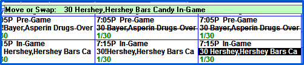
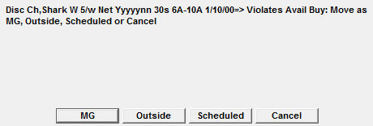
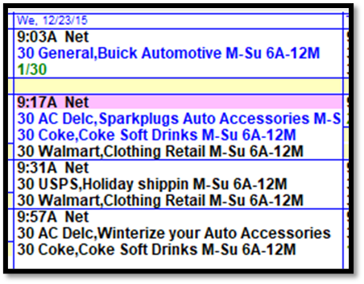

Moving Spots
When the “Mode” button at the top of the screen is set to “Move”, spots can be moved manually on the Spots screen by dragging and dropping the spot or by using a mouse click technique.
Moving a Spot by Dragging and Dropping
To move a spot on the Spots screen by dragging and dropping, click and hold the mouse over the spot until the word “Drag” appears. Then simply drag and drop the spot on the desired avail or the first available space in the Missed Area or Work Area.
Swapping Spots
To swap one spot with another one, drag one spot on top of another spot and the word “Drag” will change to “Swap”. Release the mouse button and the two spots will swap positions with each other.
When moving spots, warning messages will appear if the move will violate product protection rules or advertiser separation rules. The move can still be done if needed by clicking Okay on the warning message.
Moving Multiple Spots at the Same Time
It is possible to move multiple spots at the same time from the Missed Area to the Work Area, or from the Work Area to the Missed Area (when the Spots toggle on the left side of the Missed Area is selected).
To move several spots at once using Ctrl-Click:
- Click a spot in the Missed Area or Work Area. It will be highlighted with a gray background when it is selected.
- Ctrl-Click (hold the Ctrl key down and click with the mouse button) on another spot to select it as well.
- Using Ctrl-Click, select all the spots that you want to move. All the selected spots will have a gray background.
- Position the mouse pointer over a selected spot then click and hold the mouse button down until the word “Drag” appears.
- Drag the spots to the first available area until the word “Move” appears, then release the mouse button to move the spots.
- This can only be done when moving spots from the Missed Area to the Work Area, or the Work Area to the Missed Area.
A group of spots can also be moved by clicking the first spot in the list and shift-clicking the last spot in the list to move those two spots and all the spots between them.
- Click the first spot that you want to move in the Missed Area or Work Area. It will be highlighted with a gray background when it is selected.
- Holding down the Shift key, mouse click on the last spot in the list that you want to move. The first spot and the last spot and every spot in between will be highlighted in gray.
- Position the mouse pointer over a selected spot then click and hold the mouse button down until the word “Drag” appears.
- Drag the spots to the first available area until the word “Move” appears, then release the mouse button to move the spots.
- This can only be done when moving spots from the Missed Area to the Work Area, or the Work Area to the Missed Area.
Moving a Spot by Mouse Clicking

To move a spot without dragging, double mouse click the spot. The spot will become highlighted and a green line will appear with the spot’s information. Once highlighted, double mouse click on an open avail to move it into the avail, or on another spot to swap positions.
The double mouse click spot move method can also be used to move spots from the Work Area to the Missed Area, or the Missed Area to the Work Area, or from either area into an open avail or have it swap with a spot in an avail.
Moving spots across Weeks, Vehicles, and Daypart Specifications
When you attempt to move a spot across vehicles, weeks, avail names, or ordered daypart specifications, you will receive a violation warning message, and will be asked (if applicable) whether to move the spot as a Makegood, Outside, Scheduled, or Cancel the move.

- MG (Makegood): Spots will be flagged as a makegood on the invoice for non-hidden line spots when billing as aired.
- Outside: Actual aired times will be stated on the invoice (for non-hidden line spots), but attention to the spot being made good will not be highlighted
- Scheduled: This will cause the spot move to look as if it was ordered this way on the invoice. This option only appears when moving a spot from an ordered avail name into another avail name
- Cancel: This cancels the spot move.
Moving Sports vehicle spots to a non-sports vehicle
To move a spot from a sports vehicle into a non-sports vehicle, the sports vehicle must be set to allow spot moves of this type (in Vehicle Options->Sports), and the spot must be in missed. Then switch to the non-sports vehicle that the spot needs to be moved to, click the Missed Area dropdown, then press the “All” vehicle toggle. Set the dropdown to either “Current Week” or “Current Month” or “Past Month” – whatever the correct setting is to locate the missed sports spot – and the missed sports vehicle spot will appear in the missed area (along with any other spots that meet the selected criteria). Then drag the missed sports spot into the avail it needs to be scheduled in.
Overbooking
On version 7.1 and above, a feature exists that makes it possible to overbook avails on the Spots screen. To enable this feature, in Vehicle Options, on the Sales tab, for any vehicle that should allow overbooking, the “allow overbooking of avails” setting must be set to Yes, and the “Sellout Defined By” setting on the same tab should be set to Units or Units and Seconds (this feature is not compatible with the Matching Seconds setting).
When enabled, on the Spots screen, if a break has no available inventory and you wish to overbook it with a spot, click on the spot, keep the mouse button held down, and drag the spot onto the avail name for that break, and an “Overbook” indicator will appear, similar to the “Swap” indicator that appears when attempting to swap two spots. Release the mouse button when the “Overbook” indicator is appearing to have the spot get overbooked into that break.
When a break is overbooked like this, the avail units/seconds will be expanded (for that break on that day), and the break time and avail name section of the break will be shown with a light magenta background color. In the picture below, the 9:17a break has been overbooked.

The inventory section of the Avails report will reflect the expanded inventory. If a spot is removed from an overbooked avail, so that it’s no longer overbooked, that avail will remain expanded, both visibly on the Spots screen and when calculating avails for the Demo Bar avails, the Advanced Avails, and the Avails report.